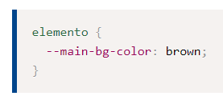

En CSS, las propiedades personalizadas (también conocidas como variables) son entidades definidas por autores de CSS que contienen valores específicos que se pueden volver a utilizar en un documento. Se establecen mediante la notación de propiedades personalizadas
Para declarar propiedades personalizadas (variables) usamos un nombre que comienze con dos guiones (--), y un valor que puede ser cualquier valor válido de CSS. Como cualquier otra propiedad, la escribimos dentro de un set de reglas de estilo, algo así: 